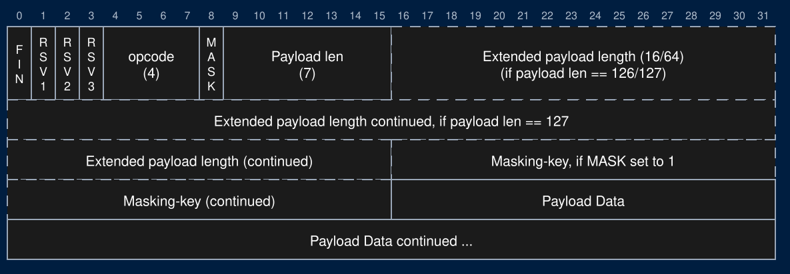

WebSocket Handshake
Upgrading an HTTP connection to a WebSocket, authenticating the connection, and Cross-Site WebSocket Hijacking
WebSockets
AJAX Summary
- Retrieve/Send data from the server after the page loads without a page reload
- To get new data from the server:
- polling
- long-polling
- If the server has new data to send to the client
- Must wait for a poll request
WebSockets
- Two-way communication between server and client
- Server can "push" new data to each client without being prompted by an HTTP request
- Enables real-time [minus network delays] communication between users
- Without long-polling
- Works by keeping a TCP socket open
WebSocket Overview
- WebSocket protocol:
- Establish a TCP connection
- Client sends an HTTP request to upgrade to the WebSocket protocol
- Server responds confirming the upgrade request
- Client and server keep the TCP connection open
- Client and server send WebSocket messages/frames over the TCP connection until one side closes the connection
The Handshake
WebSocket Handshake
- When the server receives a WebSocket HTTP request
- Take steps to keep this TCP socket open as a WebSocket connection
- These steps ensure that the client knows the server speaks the WS protocol
- After the handshake, client/server can both send messages over the socket
WebSocket Handshake
- Client sends an HTTP GET request to the WebSocket path
- Client sets headers
- Connection: Upgrade
- Upgrade: websocket
- Sec-WebSocket-Key:
<random_key>
- Server responds with 101 Switching Protocols with headers
- Connection: Upgrade
- Upgrade: websocket
- Sec-WebSocket-Accept:
<accept_response>
The Handshake Request
GET /websocket HTTP/1.1
Host: localhost:8080
Connection: Upgrade
Upgrade: websocket
Sec-WebSocket-Version: 13
Sec-WebSocket-Key: dGhlIHNhbXBsZSBub25jZQ==
Origin: http://localhost:8080
Cookie: auth_token=8f3a91c2...- A normal HTTP GET request. It arrives through the same keep-alive loop as every other request
Sec-WebSocket-Keyis 16 random bytes, base64 encoded, new for every connection- Note the
OriginandCookieheaders. We'll need both later
The Handshake Response
HTTP/1.1 101 Switching Protocols
Connection: Upgrade
Upgrade: websocket
Sec-WebSocket-Accept: s3pPLMBiTxaQ9kYGzzhZRbK+xOo=
101 Switching Protocolsis the last HTTP message on this connection- No body, so no
Content-Length - After the blank line, both sides only send WebSocket frames
Computing the Accept
- The client generates a random "Sec-WebSocket-Key" for each new WebSocket connection
- The server appends a specific GUID to this key
- "258EAFA5-E914-47DA-95CA-C5AB0DC85B11"
- Computes the SHA-1 hash
- "Sec-WebSocket-Accept" is the base64 encoding of the hash
- Why?
- Client ensured that the server speaks the WS protocol properly
- Highly unlikely this value would be returned by accident
- Avoid caching
- Client ensured that the server speaks the WS protocol properly
Why the Sec- Headers?
- Headers that start with
Sec-are forbidden headers- Only the browser can set them. JavaScript's
fetchcannot
- Only the browser can set them. JavaScript's
- A page can't use
fetchto fake a WebSocket handshake - A server that doesn't understand WebSockets, or a cache replaying an old response, won't return the right accept value
- Both sides prove they speak the WebSocket protocol before a single frame is sent
- Client set a Sec- header so you know it was sent by their browser
In the Browser
WebSockets in the Browser
- Create a new WebSocket object with the host/path to connect to
- Choose a path and set up your server to accept WebSocket requests on that path
- Use
wss://on a page served overhttps://- Browsers block
ws://connections fromhttps://pages (mixed content)
- Browsers block
WebSockets in the Browser
- Set
onmessageto a function that will be called whenever a message is received - The argument of the call will contain the message
WebSockets in the Browser
- Call the
sendmethod to send a message to the server - Can give it a String and the WebSocket object will convert it to a frame
- We'll parse this frame on the server
Authenticating a WebSocket
Who Is On This Connection?
- WebSocket frames have no headers, and therefore no cookies (No auth token)
- The handshake is the only HTTP request on a WebSocket connection
- The browser attaches its cookies to it, including the auth token
- This is your only chance to authenticate the user
- Authenticate during the handshake, before sending the 101
- Same as any other request: read the
auth_tokencookie, hash it, look it up - Store the username with this connection
- Same as any other request: read the
- Every frame on this connection is from that user, for as long as the connection is open
Never Trust the Message
{"messageType": "direct_message", "fromUser": "admin", "text": "Trust me"}- Anyone can open a WebSocket to your server and send any message they want
- Never use a username, or any other identity, that arrives in a message
- The only identity you trust is the one you authenticated in the handshake
- No auth token? The connection is a guest for as long as it's open
- Guests can still use features that don't require an account
Authentication is Frozen
- The connection keeps the identity it had during the handshake
- The user logs out in another tab: this connection is still logged in as them
- The user logs in after the page loads: this connection is still a guest
- Common solutions:
- The front end reconnects after a login or logout (a page reload does this)
- On logout, the server closes every connection that belongs to that user
- Long-lived connections make you think about when authentication is checked
Cross-Site WebSocket Hijacking
Recall: XSRF
- A malicious page sends a request to your server
- The browser attaches the victim's cookies
- The Same-Origin Policy stops the attacker from reading the response
- XSRF tokens stop your server from accepting the request
The SOP and WebSockets
- The Same-Origin Policy does not apply to WebSockets
- No preflight
- No CORS
- Any page can open a WebSocket to any server and read every message
- The WebSocket protocol made a different choice
- The browser tells the server which origin the page is from
- The server decides whether to accept the connection
The Attack
<script>
const socket = new WebSocket("ws://localhost:8080/websocket");
socket.onopen = () => socket.send(JSON.stringify(
{"messageType": "direct_message", "targetUser": "cse312", "text": "Sent by the attacker"}));
socket.onmessage = (message) => console.log("Stolen: " + message.data);
</script>- The victim visits the attacker's page while logged in to your app
- The browser sends the handshake with the victim's cookies
- Your server authenticates the connection as the victim
- The attacker can send messages and read every message as the victim
- XSRF + reading the responses = a hijacked session
SameSite and WebSockets
- The handshake is not a navigation
Laxcookies are not sent on a cross-site handshake
- A cross-site attack fails if the auth cookie is
LaxorStrict- Browsers disagree on the default when
SameSiteis not set
- Browsers disagree on the default when
- A same-site attack works, even with
Strict- A different subdomain, or a different port
http://localhost:5000attackinghttp://localhost:8080is same-site!
- Browser protections help most users, not all
- We need protection on our server
The Origin Header
- Browsers send an
Originheader with every WebSocket handshake Originis a forbidden header. JavaScript can't change it- In a browser, the
Originis honest
- In a browser, the
- A script or curl can send any
Originit wants- But it doesn't have the victim's cookies. It can only authenticate as itself
- RFC 6455: servers should check the
Originand respond403 Forbiddenif it isn't one they expect - Your origin changes when you deploy. Keep the allowed origins in an environment variable
Tickets
- Extra protection that works like an XSRF token:
- The page sends
POST /api/websocket-ticketwith its XSRF token - The server responds with a random ticket: single use, expires in ~30 seconds, tied to this user
- The page connects to
/websocket?ticket=... - The server verifies the ticket during the handshake, then deletes it
- The page sends
- The attacker's page can't read the ticket. The SOP applies to the
fetch - Short-lived and single use since URLs often end up in logs
After the Handshake
The Connection Changes Protocols
- Recall the keep-alive loop: read a request, send a response, repeat
- After you send the 101, the next bytes on this socket are WebSocket frames, not HTTP requests
- Never pass this connection back to your HTTP parsing
- Switch to a WebSocket loop: read a frame, handle it, repeat
- Until a close frame or an error
- The goroutine for this connection now lives as long as the WebSocket: minutes, or hours
Many Connections
- Every open tab is an open TCP connection and a goroutine on your server
- Features like broadcasting must reach other connections
- Store your connections in a data structure that every goroutine can reach
- Along with the user you authenticated for each connection
- Many goroutines sharing the same data at the same time...
- Proper concurrency matters
WebSocket Frames
- Once the connection is established
- Two-way communication via web socket frames
- A frame is a specifically formatted sequence of bits containing the message to be sent
- Yes, bits! (And you thought bytes were fun!)
- Parse these bits to read the message
WebSocket Frame
- https://tools.ietf.org/html/rfc6455#section-5.2
- We'll see how to parse through this next time
